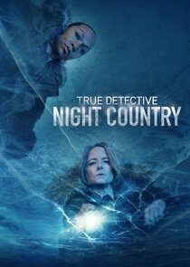
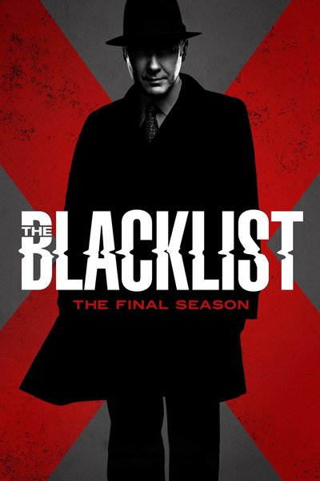
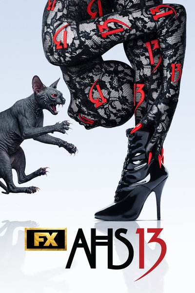
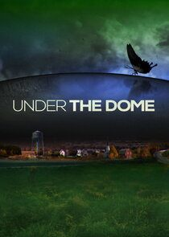
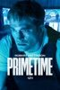

Netflix #1
Netflix #1Black Mirror
2011 · Netflix series · ★ 8.4
DramaOver the last ten years, technology has transformed almost every aspect of our lives before we've had time to
Updated 16 Nov 2026 · Ranked by TVMaze popularity weight, cross-checked with audience ratings (snapshot: 16 Nov 2026).
Answer: The best thriller series on Netflix in 2026, by the ReelOpal ranking (TVMaze popularity weight, cross-checked with audience ratings, snapshot 16 Nov 2026): Black Mirror (8.4) at #1, House of Cards (8.2) and Longmire (8.3) behind it. Three Netflix-carried thrillers make the list below, followed by more top-rated thrillers from the wider catalog.
These three are Netflix-carried series in the TVMaze catalog (webChannel: Netflix), ordered by audience rating. Tap any poster for cast, ratings and the official series page.
Netflix #1 Netflix #4
Netflix #4 Netflix #3
Netflix #3Nine more thrillers from the wider ReelOpal catalog, ordered by audience rating. These are catalog titles, not Netflix claims — availability varies by country and service, and each title page links to its official provider.
 ★ 9.2
★ 9.2
★ 8.1 ★ 8.1
★ 8.1
★ 8.0
★ 7.4
★ 6.6 US chart #6
US chart #6
US chart #7Black Mirror (8.4) — #1 in the ReelOpal thriller ranking and #1 in the Netflix Top 10 for the week of 16–22 November 2026 (TVMaze-popularity snapshot, 16 Nov 2026).
Yes. TVMaze lists Black Mirror as Running as of 16 November 2026. Each episode is a standalone story, so you can start with any season.
The three series in the first list are Netflix-carried series in the TVMaze catalog. Netflix's catalogue rotates by country and month, so check netflix.com before you settle in — the title pages link to each show's official page.
More from ReelOpal: what to watch on Netflix tonight, the Netflix Top 10 this week, where to watch the Top 10 legally in the USA, and the best movies of 2026.
One link, matched to your country — the trending movie, series & streaming offer for US & Europe viewers right now.
Checking…
Get the weekly Top 10 — Netflix trending, US & Europe movie charts and the highest-rated premieres — in one short email every Friday.
✅ You're in. Your first Top 10 digest is queued for Friday.
See this week's Netflix Top 10